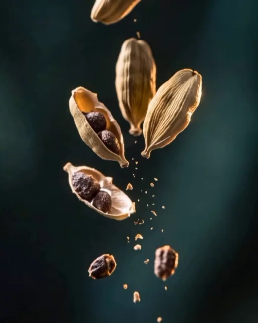
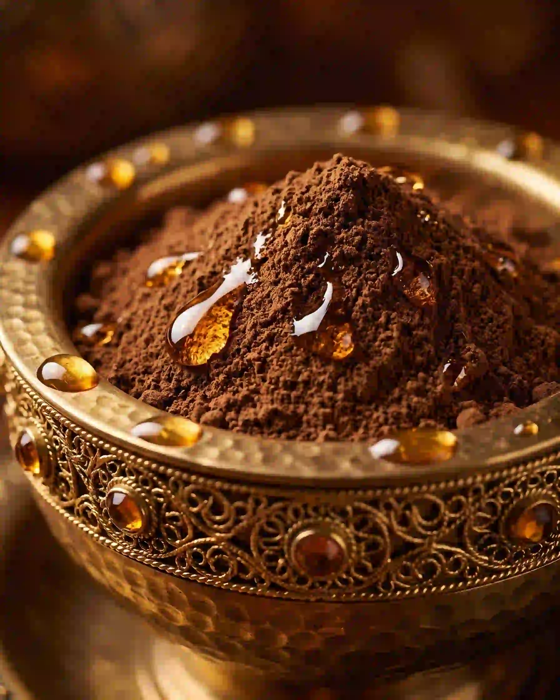
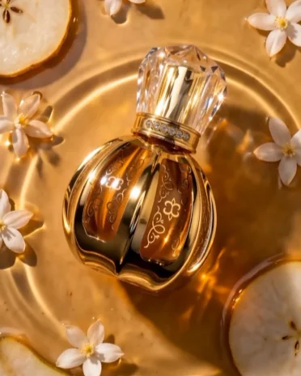
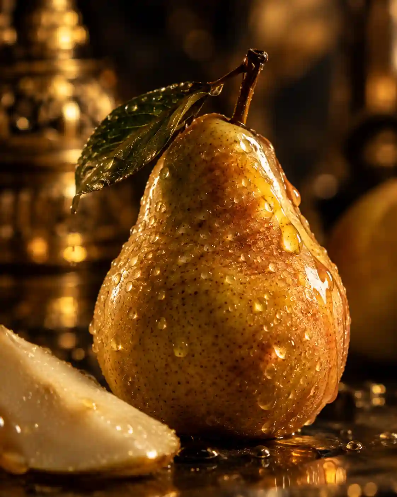
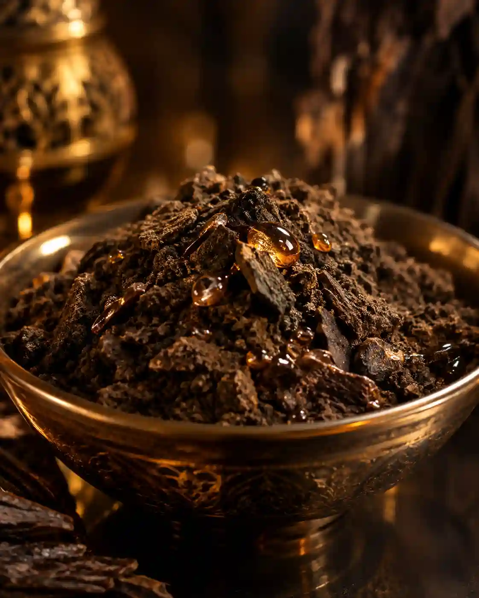
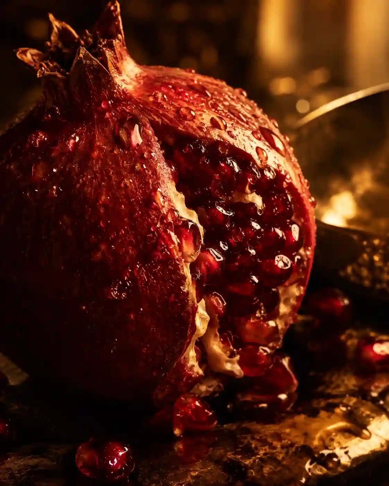

صناعة يدوية سودانية · مكونات طبيعية مختارة بعناية
عطور، بخور، دلكة سودانية، زيوت طبيعية، ومنتجات للعناية بالجسم والشعر — كل قطعة تُصنع يدوياً بحب واهتمام بكل التفاصيل.
اكتشف مجموعتنا





مكونات طبيعية.. تُعتق بحب لتلامس حواسك
المنتجات المفضلة لدى عملائنا
تصفح مجموعتنا الكاملة
بدأ مشروعنا من شغف عائلي بصناعة العطور ومنتجات العناية التقليدية، وتحول إلى مشروع صغير نقدم من خلاله عطوراً وبخوراً ودلكة سودانية ومنتجات طبيعية للعناية بالجسم والشعر، مصنوعة يدوياً بحب واهتمام بكل التفاصيل.
لأي استفسار أو طلب، تواصل معنا مباشرة عبر واتساب
تواصل عبر واتساب